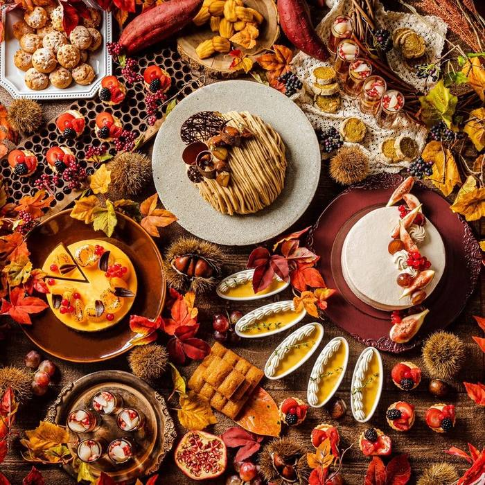
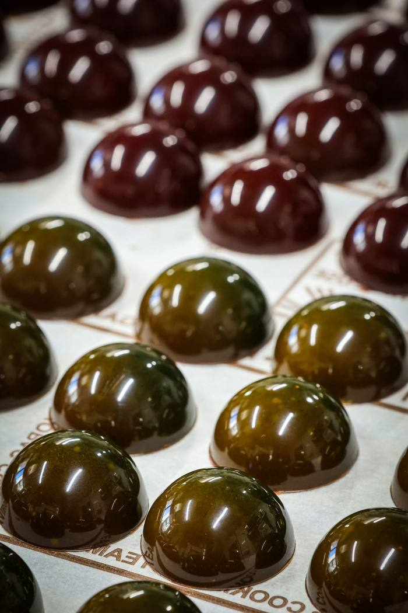

ホテル・ブライダル
アフタヌーンティーのスタンドや、ゲストが持ち帰る引き菓子は、施設の印象に残る部分です。季節の素材と施設の雰囲気に合わせて、見た目・味・日持ちの釣り合いを考えます。
- アフタヌーンティーの焼き菓子・プティフール
- ウェディングの引き菓子・プチギフト
- ウェディングケーキ・記念日のケーキ
- 周年・記念品のオリジナルギフト
Patisserie Oliodo.›法人の方へ（OEM・ODM）
お手持ちのレシピで製造するOEMにも、レシピづくりから一緒に考えるODMにも対応しています。担当は、2025年 大阪・関西万博「日本の宝物パフェグランプリ」でグランプリをいただいたパティシエ 佐藤 亘。焼き菓子は50個からご相談いただけます。
相談する
50個から
焼き菓子の場合。品目・仕様によって変わります。まずはご希望の数量をお知らせください。

アフタヌーンティーのスタンドや、ゲストが持ち帰る引き菓子は、施設の印象に残る部分です。季節の素材と施設の雰囲気に合わせて、見た目・味・日持ちの釣り合いを考えます。

ショーケースに並べる焼き菓子から、お店の看板になるパフェやデセールまで。店名で販売できる商品として、お店の仕込みを増やさずに品揃えを広げられます。
これまでつくってきたものの一部です。クッキー・サブレの詰め合わせや、季節の焼き菓子もご相談ください。





これまでに、ホテルのアフタヌーンティーの菓子、カフェ・レストランへの焼き菓子の卸、ブランドのノベルティやギフト、季節限定商品の共同開発、ウェディングや記念日のケーキ、ポップアップでのパフェのコラボレーションをお手伝いしてきました。
構想の段階でも構いません。商品のイメージ、数量、時期をお聞かせください。3営業日以内にご返信いたします。
メールアプリを開きました。
送信が完了しましたら、3営業日以内にご返信いたします。開かない場合は w.sato@oliodo.com まで直接ご連絡ください。